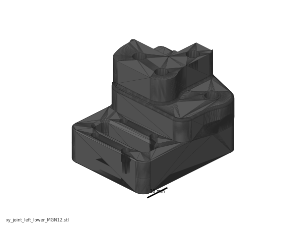
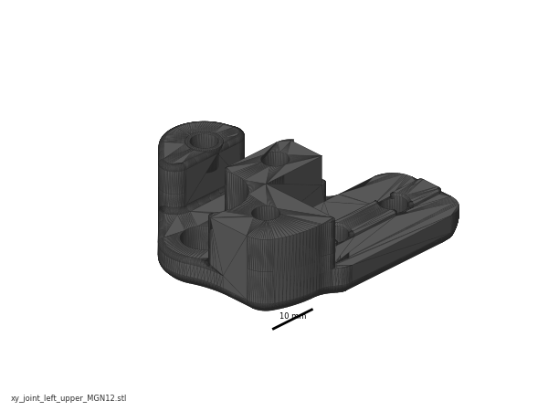
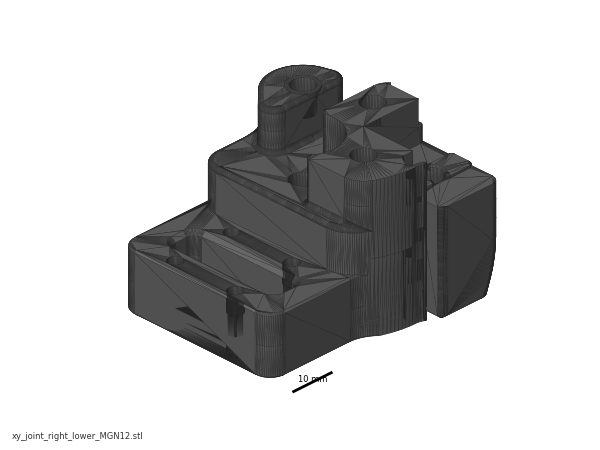
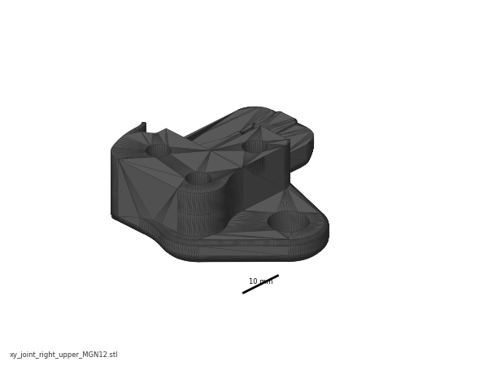
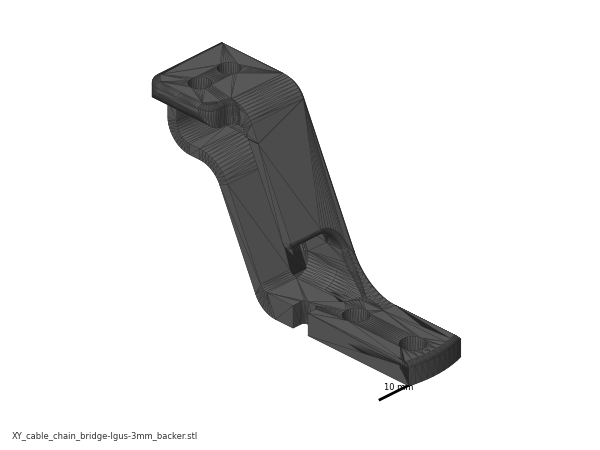
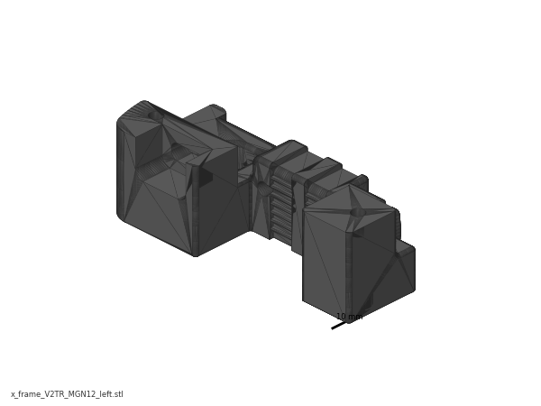
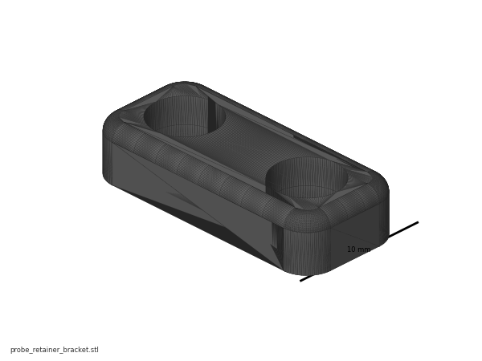

Before you start Chapter 05¶
Before you start · Chapter 05 — Gantry: X and Y axes, XY joints, X carriage, titanium backers
You build the whole gantry on the bench: the rear E extrusion with both drives, both Y axes with their MGN9 rails, both XY joints, the X extrusion with its MGN12 rail, and the titanium extrusion backers. The chapter ends with the X axis riding on the Y carriages, and it unlocks Ch 06 (gantry install, Z belts, squaring).
What you're building in this chapter: The gantry is the whole moving upper half of the printer: a rectangle of aluminium extrusion that later hangs on four belts and slides up and down, with the toolhead riding inside it. Its back edge is the E extrusion, the rear cross-beam that carries the A and B motors you built in Ch 04. Voron calls it the rear gantry extrusion (p.122). The manual's "XY Bridge" label on p.83 means something else: the blue cable bridge on the right XY joint. Two side extrusions, the Y axes, run forward from the E extrusion. Each has a linear rail along one face and a front idler block at its front end that turns its belt back. Spanning the two sides is the X beam, capped at each end by an XY joint: the printed blocks that ride on the Y carriages and turn each belt from its Y run to its X run. Screwed to the face opposite every rail are the titanium backers, flat strips that stop a steel rail bowing its aluminium extrusion as the chamber heats. Nothing in this chapter gets belts or squaring: both belong to Ch 06 and Ch 07, and doing either now would undo work done here.

Time: 5.0–7.0 h hands-on, first build, two people (survey §5.1 P05 / §7.2).
Sessions: 12 × ~30 min. Each one ends at a safe place to stop, and each Pause: line carries its own minutes, a first-build estimate.
Prerequisites:
- Ch 04 is done: the A drive, the B drive and both front idler assemblies are built and checked (manual p.62–81). This chapter uses them whole.
- Ch 00 is done: all seven rails are cleaned and packed with grease before they go on an extrusion (LDO rail grease guide), and the rail guides
Tools/MGN9_rail_guide_x2.stlandTools/MGN12_rail_guide_x2.stlare printed (batch B00). The rails still wear their Ch 00 end bands (Step 00.17); they come off at Steps 05.11 and 05.33. - Printed parts: batch B04 (XY joints and X carriage, plate B04-P1, 8.8 h, black) and batch B02, blue plates P1, P2 and P4: the endstop pod is on P1, the 2-hole cable bridge on P2 and the raised cable bridge on P4, and the four upper Z-belt clips are one each on P1 and P2 and two on P4 (print plan §B04). B04 needs Gate B (Step B00.7).
- The titanium backer set (Fabreeko/LDO, 350 size) is unpacked and counted, and 61 M3 roll-in T-nuts are counted out from the kit bag: 32 for the rails and extrusion ends, 29 for the backers. The backer set ships none.
- Extrusions: the C ×2, D ×1 and E ×1 you bagged in Ch 01.
Tools
- Hex drivers 2, 2.5, 3 and 4 mm. A ball-end 2.5 mm driver, whose rounded tip works at an angle, helps at the XY joints.
- T10 Torx driver, strongly preferred for the backers' M3 FHCS: a hex key slips out of a countersunk screw head easily (backers README).
- The printed rail guides
MGN9_rail_guide_x2andMGN12_rail_guide_x2, which hold each rail centred on its extrusion. - A 300 mm steel rule and a caliper, to make the rail overhang equal at both ends.
- Masking tape to hold the carriages on their rails, and the kit's rubber rail stoppers.
- A 2.5 mm flat screwdriver for the cable-chain latches, if you dry-fit the chain end.
Read first
- The titanium backers go on in this chapter, not after it. Fitting them once the gantry is built means taking it apart. They go on the face opposite the rail: the top of the Y extrusions and the rear of the X extrusion.
- Do not tension the A/B belts and do not square the gantry here. Both happen in Ch 06 and Ch 07, and the official squaring starts by releasing belt tension, so doing either now would just be undone. Several joints are left slightly loose on purpose.
- Every T-nut goes in before the drive and idler blocks cap the extrusion ends. The kit's T-nuts are a tight fit, so test-fit them first or load them early.
- A carriage slides off its rail easily, and a dropped one is ruined. Tape or stop every carriage the moment its rail is on an extrusion. The rails must already be greased (Ch 00); if they are not, stop and do that first.
- Which way up. Until Step 05.41 the gantry is built the way it runs: motors hanging down below the E extrusion, Y rails underneath. Then it turns upside down (motors up, rails up) so the X axis can be lowered onto the Y carriages, and it stays that way until Ch 06 turns it back (Step 06.11). Every step that turns it over says so.
For reference: hardware totals, sources and video
Printed parts
Parts arrive in the bins named below (see the bin map in print/README.md#bins); check the bin label's list before you start.
| Looks like | STL | Bin | Qty | Colour |
|---|---|---|---|---|
 |
xy_joint_left_lower_MGN12.stl |
05-XY | 1 | Black |
 |
xy_joint_left_upper_MGN12.stl |
05-XY | 1 | Black |
 |
xy_joint_right_lower_MGN12.stl |
05-XY | 1 | Black |
 |
xy_joint_right_upper_MGN12.stl |
05-XY | 1 | Black |
 |
[a]_xy_joint_cable_bridge_2hole.stl |
05-XY | 1 (fallback, bagged at Step 05.46) | Blue |
 |
XY_cable_chain_bridge-Igus-3mm_backer.stl |
05-XY | 1 (the one fitted, at Step 05.38: 3 mm taller, to match the Y backer) | Blue |
 |
x_frame_V2TR_MGN12_left.stl |
07-X | 1 | Black — staged here, fitted in Ch 07 |
 |
x_frame_V2TR_MGN12_right.stl |
07-X | 1 | Black — staged here, fitted in Ch 07 |
 |
probe_retainer_bracket.stl |
07-X | 1 | Black — staged here, fitted in Ch 07/08 |
 |
[a]_endstop_pod_D2F_switch.stl |
05-XY | 1 | Blue — fitted here, Step 05.49 |
 |
[a]_z_belt_clip_upper_x4.stl |
05-XY | 4 | Blue — fitted here under the idler and drive M5×16 (p.91, p.93, p.95), loaded with belt in Ch 06 |
 |
[a]_cable_cover.stl |
07-X | 1 | Blue — batch B02; bagged here at Step 05.46, dry-fitted in Ch 07, screwed on in Ch 10 |


Do not print [a]_endstop_pod_hall_effect.stl, [a]_xy_joint_cable_bridge_3hole.stl, or any xy_joint_*_MGN9 — wrong variants for this kit (print plan §7).
Hardware (chapter totals)
| Fastener / part | Qty | Where |
|---|---|---|
| E extrusion (rear beam) | 1 | p.85 |
| C extrusion (Y axis) | 2 | p.88 |
| D extrusion (X axis) | 1 | p.101 |
| MGN9H 400 mm rail | 2 | Y axes, p.88; carriage ships on the rail |
| MGN12H 400 mm rail | 1 | X axis, p.101; carriage ships on the rail |
| M5 roll-in T-nut | 26 | 8 in E (p.85), 12 in the C pair (p.89, p.90), 6 in D (p.102) |
| M3 roll-in T-nut | 32: 20 Y rails, 4 C-pair ends, 8 X rail | 10 per 20-hole MGN9 (p.88, LDO's second hole from each end: holes 2, 4 … 18 and 19), 4 in the C pair (p.90), 8 for the 16-hole MGN12 (p.101, both end holes) |
| M3 roll-in T-nut, backers | 29: 10 per Y backer, 9 on the X backer | from the kit's M3 roll-in bag; the backer set ships no T-nuts |
| M3×5×4 heat-set insert | 2 | cable bridge pad, for the Y chain's moving end (05.35, p.84) |
| M5×10 BHCS | 10 | 8 E extrusion to drives (p.86–87), 2 left XY joint (p.104) |
| M5×16 BHCS | 10 | 4 front idlers, through the upper Z-belt clips (p.91, p.93), 4 rear drive joints, same (p.95), 2 right XY joint + cable bridge (p.104) |
| M5×30 BHCS | 2 | XY joints from below (p.104) |
| M5×40 SHCS | 8 | 4 per XY joint (p.97–100) |
| M3×8 SHCS | 30: 20 Y rails, 8 X rail, 2 XY endstop PCB | one per marked rail hole: Y rails the second hole from each end and every second hole between, holes 2, 4 … 18 and 19, both end holes empty (p.88, LDO note); X rail every other hole from both end holes (p.101); 2 hold the PCB in its pod (p.163) |
| M3×16 SHCS | 6 | XY joints to the Y carriages (p.106): 4 left joint, 2 right joint; all six fitted, none spare |
| M3×30 SHCS | 2 | XY endstop pod to the right XY joint at 05.49: p.164 fits it through its body with 2× M3×30, not the M3×16 of p.106 |
| XY endstop PCB | 1 | in the pod (p.163), at 05.49; its cable plugs in at Ch 10 |
| M5 nut | 6 | 3 per XY joint (p.96) |
| M5 precision spacer, brass | 4 | 2 per XY joint stack — one below and one above the F695 pair (p.97, p.99) — replaces the manual's "M5 shim" |
| M5 washer, black | 2 | under the M5×30 heads (p.104) — replaces the manual's "M5 shim" |
| F695 bearing | 4 | 2 per XY joint |
| GT2 20-tooth idler, 6 mm wide | 2 | 1 per XY joint; the 9 mm wide ones are Ch 02's Z idlers |
| Titanium backer, Y — from Ti backer set | 2 | one per C extrusion: the plain one left, the one with four cable-chain pilot holes right, pilots at the rear |
| Titanium backer, X — from Ti backer set | 1 | D extrusion, rear face |
| M3×8 FHCS, Y backers — from Ti backer set | 20: 10 per Y backer | tanaes Y_backer-350 and Y_backer_chain-350 DXFs: 10 screw holes each, plus 4 chain pilots on the second (verify on bench) |
| M3×6 FHCS, X backer — from Ti backer set | 9 | tanaes X_backer_chain-350 DXF: 9 holes, plus 4 chain pilots (verify on bench) |
The West3D/Fabreeko titanium set ships 22× M3×8 FHCS and 10× M3×6 FHCS, two and one spare over the 20 + 9 holes, and no T-nuts (West3D).
Notes behind "Read first"
- The titanium backers go on during this chapter, not after it. Fitting them once the gantry is assembled or installed means a teardown (survey §5.2 W2). They mount on the face opposite the rail — top of the Y extrusions, rear of the X extrusion. "If you have a single MGN12 but decide to put a backer on top, you will be actively contributing to the problem of bimetallic expansion!" src
- Do not tension the A/B belts and do not square the gantry here. Both are Ch 06/07, and the official squaring procedure begins by releasing A/B tension — tension it now and you undo it (survey §4.4 #2, §5.2 W1). Several joints in this chapter are deliberately left "slightly loose".
- Every T-nut this chapter needs must go in before the drive and idler frames cap the extrusion ends. LDO: "Due to the tight tolerances of the extrusions and roll-in t-nuts it is advisable to either test fit before assembly … or to pre-load the t-nuts into the extrusions." src
- Short a part? This chapter needs exact counts: 4 F695, 4 spacers, 2 20T idlers, the backer screws, and 61 M3 roll-in T-nuts (the build uses 134 of the kit's 135). Recount against your Ch 00 inventory sheet, then contact Fabreeko support; do not borrow from another chapter's bag.
- Rails ship dry. If Ch 00's clean-and-pack pass has not been done, stop and do it — the flip-and-pack method needs access to the back of the rail (survey §4.4 #5).
- Carriages slide off rails and are ruined by a drop (manual p.88, p.101). Tape or stopper every carriage the moment its rail is on an extrusion.
- Orientation. Through p.105 the gantry is built the way it runs — motors hanging down below the E extrusion, Y rails underneath (p.85, p.116). p.106 turns it upside down (motors up, rails up) so the X axis can be lowered onto the Y carriages; it stays that way to the end of this chapter and is turned back in Ch 06 (Step 06.11). Every step that turns it over says so.
Sources for this chapter:
- Voron 2.4r2 assembly manual, p.82–107 — the page sequence this chapter transcribes, pinned at commit
de7e89d - LDO Build Notes § Voron 2.4 build FAQ — Rev D kit deviations, T-nut pre-loading, rail stoppers
- LDO printed-parts guide (Rev D) — 2-hole cable bridge, D2F endstop pod
- Voron 2.4r2 assembly manual, p.163–164 — the XY endstop pod, fitted early at Step 05.49 so the right XY joint has all four screws before Ch 06
- LDO rail-grease guide — rail clean-and-pack, done in Ch 00
- LDO cable-chain guide — chain sizing, latches and end links (Ch 10); the 2-hole pattern comes from the printed-parts guide
- Ti extrusion-backers README (tanaes) — which face the backers go on, and why; source of the two backer images (GPL-3.0)
- Fabreeko and West3D backer sets — supplied screw counts
- Voron docs § V2 Gantry Squaring — why nothing is squared or tensioned in this chapter
Video coverage (Steve Builds, pre-release LDO kit — differs from Rev D+): Part 3 @0:56:34 (+2m), Part 3 @1:19:23 (+16m), Part 3 @1:34:36 (+9m), Part 3 @1:43:29 (+5m), Part 4 @0:06:16 (+7m), Part 4 @0:34:10 (+9m), Part 5 @1:05:40 (+1m), Part 5 @1:20:27 (+13m)
 Helper steps: 16 · 05.2, 05.4, 05.10, 05.11, 05.14, 05.16, 05.17, 05.24, 05.36, 05.40, 05.41, 05.42, 05.49, 05.44, 05.46, 05.48
Helper steps: 16 · 05.2, 05.4, 05.10, 05.11, 05.14, 05.16, 05.17, 05.24, 05.36, 05.40, 05.41, 05.42, 05.49, 05.44, 05.46, 05.48